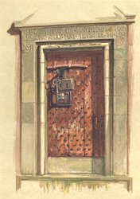
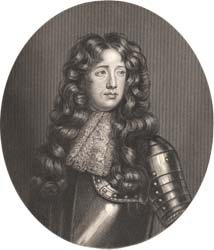

|
|
||||
|
|
Home | Corson Collection | Biography | Works | Image Collection | Recent Publications | Portraits | Correspondence | Forthcoming Events | Links | E-Texts | Contact John Morrison and Abbotsford
Morrison is, in fact, highly critical throughout of the layout of both the estate and house of Abbotsford. 'I was often at a loss', he writes, 'to reconcile Sir Walter Scott’s descriptions of scenery, which were excellent, to his practical taste, which was not always in good keeping; for, after all, Abbotsford is a strange jumble. If he had searched all over his property, he could not have built on a less interesting spot. The public road from Melrose to Selkirk passes within fifty yards of the front of his house, and is on a level with the chimney tops.' He seriously advised Scott, before building his garden walls, to 'lift or remove the whole to a more eligible situation, and, being built of hewn stone, the affair could be easily done'. Scott was greatly in need too of Morrison's advice on tree-planting, for 'he was too much given to plant in stripes or belts'. As for the interior of the house, it was 'certainly not in good taste’. Scott would often join Morrison while he was engaged in surveying the estate, 'leaning on his favourite, Tam Purdy [i.e. Purdie], and tell me tales connected with the spot I might be surveying'. These often provoked Morrison, a self-proclaimed 'Whig and Cameronian', to express political views that differed radically from Scott's own. One such exchange was sparked by Scott's procurement of the door to Edinburgh's Old Tolbooth Prison (the 'Heart of Midlothian', see right) for use as the gateway leading from his house to the offices. Its 'grim aspect' gave Morrison a 'disagreeable feeling' to think 'how many of our noble martyrs and patriots' had passed through it 'never to return, but to the scaffold and death'. 'But many a traitor', replied Scott, 'has passed also to receive his doom!' 'Yes', countered Morrison, 'your friend, Montrose, passed through it.' 'Noble martyr!', exclaimed Scott 'with great emotion'. Morrison comments that they 'entertained very different sentiments respecting the character of Montrose', a hero to Tories and Jacobites and an oppressive turncoat to the Covenanters. Morrison likewise records several similar exchanges concerning Montrose's descendent and fellow scourge of the Covenanters, John Graham of Claverhouse, the 'Great Dundee' to Scott and 'Bloody Clavers' to Morrison. Morrison recalls examining Williams's portrait of Claverhouse in Scott's study (see right) and observing that the depiction of Claverhouse in Scott's Old Mortality as one whom 'painters would love to limn and ladies to look on' could not have been based on the painting. The artist has portrayed him 'with red hair, a squint, and 'with an unnatural length between the nose and chin', which 'well accords' with the eye-witness description that Morrison's father had from an elderly friend: 'His arms were long, and reached to his knees, his red or frizzly, and his look altogether diabolical.' 'Your father and his acquaintance were Whigs, and drew a distorted picture.' 'The painter there', said Morrison, 'has done the same.' The contradiction into which Morrison falls here -- does the painting of Claverhouse 'accord well' with his father's friend's description, or is it 'distorted' -- is typical of his highly entertaining but less than reliable 'Reminiscences'. Similarly, the twice-made claim that Scott's written descriptions were 'excellent' in contract to his 'practical sense' does not tally with the mockery of Scott's eulogies of St Mary's Loch and of other Border landscapes that leave Morrison cold. One suspects too that Morrison somewhat puffs up his role in his political debates with Scott. He recalls Scott's proposal to raise a volunteer regiment to put down civil unrest in 1819. Invited to become its engineer, Morrison proclaims: 'That depends on circumstances: I will, if I think you are in the right; if not, I will be of the other party. I am a Whig and Cameronian.' Yet, in a letter of December 20, 1819, to his factor William Laidlaw (a close friend of Morrison), Scott confidently announces, ‘Morrison volunteers as our engineer' (The Letters of Sir Walter Scott, VI: 66). Scott, of course, may be indulging in wishful thinking, but it is as likely that Morrison fashions himself a rather more heroic and principled role in his 'Reminiscences' than he fulfilled in real life. Their political differences, however openly expressed, do not appear to have stood in the way of the friendship between Scott and Morrison. Morrison, in all events, commends his care for his employees and 'attention to the lower orders' which 'ill-accorded with his political principles'. As an example, he cites Scott's refusal to have the old public footpaths over his lands closed up as the Road Commissioner offered to do. A letter from Morrison to Scott, dated 20 June 1820, reveals that he made two versions of his plan of the Abbotsford estate. The sheet of paper used for his first attempt was not large enough to incorporate land purchased in the course of Morrison's preparation of the plan. He had thus been forced to affix an additional sheet to it. Morrison announces that he is preparing a neater and more durable copy on a larger sheet forScott's personal use, but suggests that the original would be adequate for the purposes of Scott's factor William Laidlaw and wood-forester Tom Purdie. It seems likely that it is the first version that Corson acquired. Last updated: 05-Nov-2004
|
|||